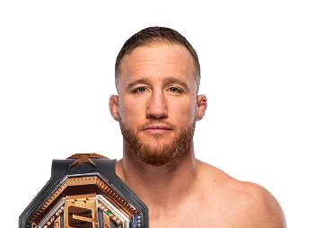

Justin Gaethje es uno de los peleadores más emocionantes en la historia de la UFC. Nació el 14 de noviembre de 1988 en Arizona, Estados Unidos. Es conocido por su estilo extremadamente agresivo y su capacidad para ofrecer peleas espectaculares llenas de acción.
Antes de llegar a la UFC, Gaethje tuvo una destacada carrera en lucha libre universitaria, lo que le dio una base sólida en grappling. Sin embargo, con el tiempo desarrolló un estilo basado principalmente en el striking, especialmente en el uso de poderosos golpes y devastadoras patadas bajas.

Cuando debutó en la UFC rápidamente se convirtió en uno de los favoritos de los fanáticos debido a su estilo de pelea sin miedo y su resistencia para intercambiar golpes con cualquier oponente.
A lo largo de su carrera ha enfrentado a algunos de los mejores peleadores del mundo en la división peso ligero, incluyendo a Khabib Nurmagomedov, Charles Oliveira y Dustin Poirier.
Peso ligero (155 lb / 70 kg)
Múltiples victorias por nocaut técnico y peleas consideradas entre las más emocionantes de la UFC.